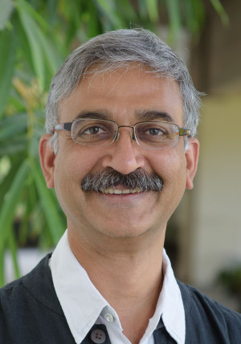
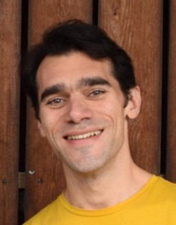
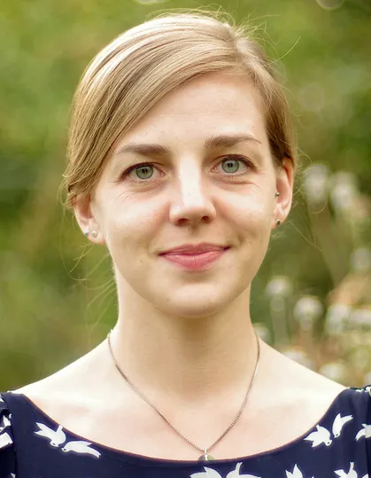
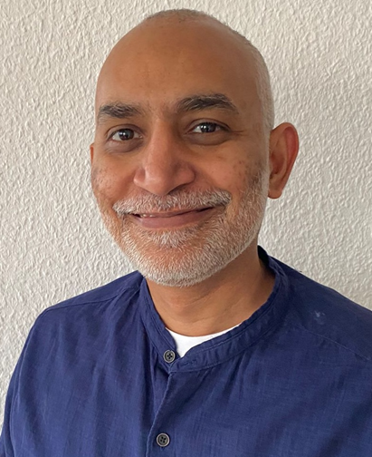

10 June 2025
A Warwick researcher in membrane-cortex mechanics was highlighted for leading an inspiring international workshop that connects mechanobiology with engineering and science education.
Understanding cellular interface at all scales of biological organisation.
The Cellular Interface Cluster brings together membrane biophysics, mechanobiology, advanced imaging and bioelectric systems modelling. We investigate how cells sense, shape, and communicate across mechanical and electrical boundaries.

The Mayor lab studies how cells build functional membrane architecture in space and time, and how membrane composition and mechanics influence signalling, endocytosis, and cellular decision-making.

Our research aims to understand, how cells detect mechanical signals at the cell membrane and how this affects the regulation of the actin cytoskeleton. To achieve this aim, we design simplified, reconstituted, minimal systems and perform experiments on cells under controlled mechanical conditions.
The Schneider lab develops advanced fluorescence microscopy and fluctuation spectroscopy tools to measure nanoscale molecular motion and membrane organisation across model membranes, cells, and zebrafish tissues.

The Kreysing lab develops new imaging techniques to understand how tissue stiffness influences neuronal maturation and electrical signalling through mechanosensitive pathways.

The Vishen lab develops coupled electrohydraulic theory for how ion transport, water flow, and mechanics work together to drive tissue growth, patterning, and morphogenesis.
A Warwick researcher in membrane-cortex mechanics was highlighted for leading an inspiring international workshop that connects mechanobiology with engineering and science education.
A new study from Dr Eva Kreysing demonstrates how tissue stiffness guides electrical maturation in neurons through Piezo1-regulated transthyretin activity.
The NCBS membrane biophysics leader joined the cluster's growing international partnership after receiving the Leverhulme International Professorship.
No positions are currently advertised. Check back soon or contact the relevant PI directly to express interest.
 University of Warwick
University of Warwick
 Leverhulme Trust
Leverhulme Trust